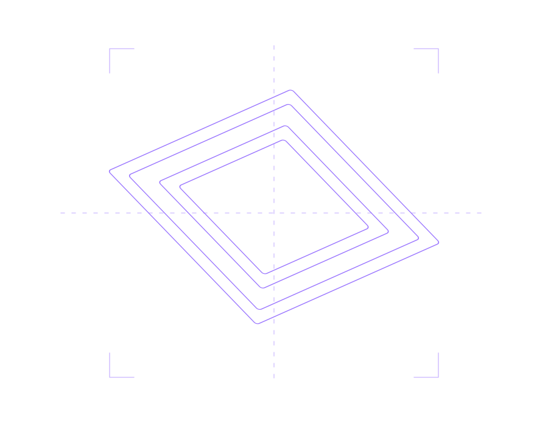

Форма.
Содержание.
Дизайн, который становится предметом.

НАВЕДИТЕ / НАЖМИТЕ · РАССМОТРИТЕ БЛИЖЕ
ИНДЕКС КОЛЛЕКЦИИ
Каждая грань —
часть истории.
01 / RitterЭКЛИПС↗02 / RitterАРТОН↗03 / RitterТРАМПОЛИ / серия↗04 / RitterТРАМПОЛИ / компакт↗05 / RitterТОРИНО↗06 / duwiУЛЬТРА↗07 / duwiСТАНДАРТ↗08 / R HOMECOMFORT / компакт↗09 / R HOMECOMFORT↗10 / duwiДАТЧИК ДВИЖЕНИЯ↗11 / RitterLED / E27↗12 / RitterAGIO↗13 / RitterCHIARO / бра↗14 / RitterCHIARO / круг↗15 / duwiНАКОНЕЧНИКИ НШВИ↗